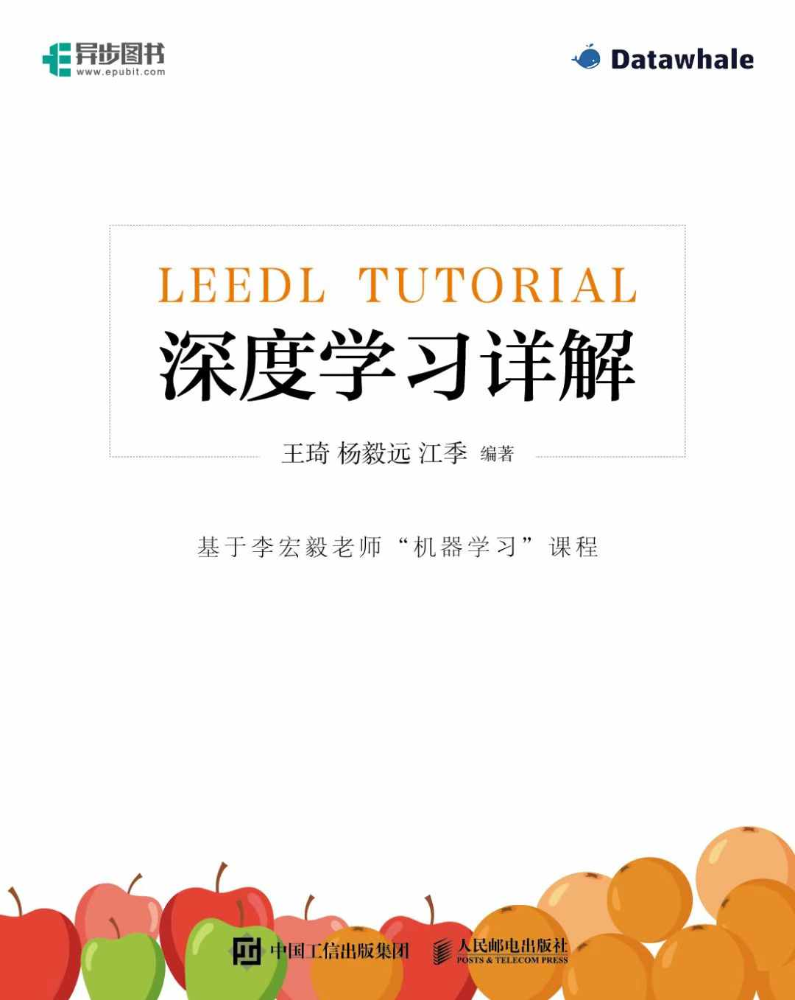

About Me
Yiyuan Yang is a D.Phil. (Ph.D.) student and Clarendon Scholar in the Department of Computer Science at the University of Oxford, specializing in data mining, time series, audio/speech, signal processing, and large language models. He holds a master's degree from the Department of Automation at Tsinghua University and a bachelor's degree from the School of Artificial Intelligence and Automation (Innovation Honors Class) and Qiming College at Huazhong University of Science and Technology. He has also interned at the Microsoft Applied Sciences Group, Microsoft Research, and Alibaba DAMO Academy.
Yiyuan is an avid open-source contributor, with projects amassing over 37,000 GitHub stars. He has authored three books based on his tutorials — two of them bestsellers — and published over 40 papers in top journals and conferences, including TKDE, CSUR, KDD, NeurIPS, ACL, AAAI, IJCAI, TNNLS, CIKM, ICASSP, and Interspeech, with over 2,000 citations. He also serves as a reviewer for leading journals and conferences, including TPAMI, TKDE, TKDD, TIFS, TOS, TNNLS, TOMM, TCYB, TCSVT, TII, IoT, SPL, TITS, Neurocomputing, NeurIPS, KDD, WWW, AAAI, ACL, and SDM. In his free time, Yiyuan enjoys singing and playing various sports.
News
Research Interests
Currently, I focus on the following research topics:
Spatio-Temporal Data Mining
Spatio-temporal data mining and signal processing for real-world sensing systems.
Time Series & LLMs
Time-series analysis, anomaly detection, and reasoning with large language models.
Audio & Multimodal Learning
Acoustic scene understanding, speech enhancement, separation, and localization, and audio-centric multimodal learning.
Real-World AI Deployment
Deploying algorithms in real-world applications — efficient, robust, and fault-tolerant models for industrial sensing, monitoring, and production AI systems.
Education & Experience
Education
-
2023.01 – Present
Supervised by Prof. Niki Trigoni and Prof. Andrew Markham · Fully funded by the Clarendon Scholarship and Merton College Scholarship
-
2019.09 – 2022.07
GPA 3.98 / 4.0 · Rank 1 / 65
-
2015.09 – 2019.06
B.Eng., School of Artificial Intelligence and Automation & Qiming College, Huazhong University of Science and TechnologyInnovation Honors Class (Automation and Science) · GPA 3.91 / 4.0 (Top 1%)
Internships & Exchange
-
Incoming · 2026
Research Scientist Intern, Superintelligence Lab, MetaSpeech/audio and multimodal LLMs · Bellevue, WA, USA · start date to be confirmed
-
2026.04 – 2026.07
Applied Scientist Intern, Applied Sciences Group, MicrosoftSupervised by Dr. Eric Sommerlade · LLM-driven code generation that automatically produces explanatory videos · Reading, UK
-
2025.06 – 2025.08
Research Intern, Applied Sciences Group, Microsoft ResearchSupervised by Dr. Soumitro Chakrabarty · Adaptive speech separation in conversational scenarios · Munich, Germany
-
2022.10 – 2023.02
Research Intern, Alibaba DAMO Academy, Decision Intelligence LabSupervised by Dr. Qingsong Wen and Dr. Liang Sun · Time-series anomaly detection — work that led to a granted patent and the DCdetector paper (KDD 2023) · Hangzhou, China
-
2019.01 – 2019.02
Exchange Student, University of Cambridge
Selected Publications
Full list on my Google Scholar profile.
Conference Papers 19 entries
- 19
Geometry-Informed Distributed Acoustic Scene Understanding
- 18
End-to-End Learning for Partially-Observed Time Series with PyPOTS
- 17
Time-RA: Towards Time Series Reasoning for Anomaly Diagnosis with LLM Feedback
- 16
ScatterAD: Temporal-Topological Scattering Mechanism for Time Series Anomaly Detection
- 15
Target Speaker Extraction through Comparing Noisy Positive and Negative Audio Enrollments
- 14
OxBioZ: Wearable Continuous Bioimpedance Monitoring System and Multi-Activity Dataset with Physiological and Motion Signals
- 13
Efficient and Microphone-Fault-Tolerant 3D Sound Source Localization
- 12
Time-MQA: Time Series Multi-Task Question Answering with Context Enhancement
- 11
Deep Learning for Multivariate Time Series Imputation: A Survey
- 10
Advancing Multivariate Time Series Anomaly Detection: A Comprehensive Benchmark with Real-World Data from Alibaba Cloud
- 9
Pre-training Feature Guided Diffusion Model for Speech Enhancement
- 8
SSL-Net: A Synergistic Spectral and Learning-based Network for Efficient Bird Sound Classification
- 7
AI-based Energy Transportation Safety: Pipeline Radial Threat Estimation using Intelligent Sensing System
- 6
DynPoint: Dynamic Neural Point for View Synthesis
- 5
DCdetector: Dual Attention Contrastive Representation Learning for Time Series Anomaly Detection
- 4
SGDP: A Stream-Graph Neural Network Based Data Prefetcher
- 3
Block Access Pattern Discovery via Compressed Full Tensor Transformer
- 2
Pipeline Safety Early Warning Method for Distributed Signal using Bilinear CNN and LightGBM
- 1
Early Safety Warnings for Long-Distance Pipelines: A Distributed Optical Fiber Sensor Machine Learning Approach
Journal Articles 12 entries
- 12
Enhanced Pipeline Radial Threat Monitoring System with Distributed Acoustic Sensing and Multi-View Information Fusion
- 11
Monitoring Landslide Disturbances using Distributed Acoustic Sensing under Extreme Weather Conditions
- 10
A Survey on Diffusion Models for Time Series and Spatio-Temporal Data
- 9
Constraints on Percussive Seismic Signals in a Noisy Environment by European Fiddler Crabs, Afruca tangeri
- 8
PatchAD: A Lightweight Patch-based MLP-Mixer for Time Series Anomaly Detection
- 7
SimAD: A Simple Dissimilarity-based Approach for Time Series Anomaly Detection
- 6
DACAD: Domain Adaptation Contrastive Learning for Anomaly Detection in Multivariate Time Series
- 5
A Pipeline Inspection Gauge Positioning Method Based on Distributed Fiber Optic Vibration Sensing
- 4
A Pipeline Intrusion Detection Method Based on Temporal Modeling and Hierarchical Classification in Optical Fiber Sensing
- 3
Localizing and Tracking of In-Pipe Inspection Robots Based on Distributed Optical Fiber Sensing
- 2
Pipeline Safety Early Warning by Multi-feature-fusion CNN and LightGBM Analysis of Signals from Distributed Optical Fiber Sensors
- 1
Long-Distance Pipeline Safety Early Warning: A Distributed Optical Fiber Sensing Semi-Supervised Learning Method
Books 3 entries
Joy-RL: Reinforcement Learning Practical Tutorial
Joy-RL：强化学习实践教程 · Posts & Telecom Press, 2025
GitHub Repo E-book Code Jingdong
LeeDL-Tutorial
深度学习详解 · Posts & Telecom Press, 2024
★ JD 2024 Annual Best Books (overall Top 50, 京东2024年度好书) · PTP Excellent New Book of 2024 (人民邮电出版社年度影响力新书)
GitHub Repo E-book Douban Dangdang JingdongEasy-RL: Reinforcement Learning Tutorial
Easy-RL：强化学习教程（蘑菇书） · Posts & Telecom Press, 2022
★ PTP Excellent Book of 2022
GitHub Repo Online Version E-book Douban Taobao Dangdang JingdongPreprints 5 entries
- 5
Diversified Scaling Inference in Time Series Foundation Models
- 4
PyPOTS: A Python Toolkit for Machine Learning on Partially-Observed Time Series
- 3
Achieving Time Series Reasoning Requires Rethinking Model Design, Tasks Formulation, and Evaluation
- 2
Intelligent Cross-Organizational Process Mining: A Survey and New Perspectives
- 1
TSI-Bench: Benchmarking Time Series Imputation
Open-Source Projects
Community projects with 37,000+ GitHub stars in total. Star counts update live.
A machine learning ecosystem for unified time-series analysis. As a core contributor, I help build this open-source toolkit for modeling partially observed multivariate time series; it integrates 50+ SOTA algorithms across imputation, forecasting, classification, clustering, and anomaly detection.
Over 3M PyPI downloads, with users from 200+ top universities and companies. Part of the PyTorch Ecosystem since 2023.
A Chinese deep learning tutorial (深度学习详解), including an e-book and code.
Topped Jingdong's new-AI-book chart for about 30 days. The print edition was named a PTP Excellent New Book of 2024 and one of JD's 2024 Annual Best Books (overall Top 50).
A reinforcement learning tutorial (蘑菇书) with an e-book and an online tutorial, plus an online course with Baidu PaddlePaddle AI Studio that attracted 2,000+ learners.
Topped the new-book charts for computer books on Dangdang and AI books on Jingdong within ten days, with related posts drawing 100,000+ reads. The book is held by the National Library of China and the libraries of Tsinghua University, Shanghai Jiao Tong University, Zhejiang University, the Chinese Academy of Sciences, and Merton College, Oxford, among others. The e-book has been downloaded 10,000+ times, and the print edition was selected as a PTP key book and a PTP Excellent Book of Q1 2022.
A data-mining tutorial on analyzing academic trends on arXiv, which I led. It includes a video and a competition on the Alibaba Tianchi platform that drew 4,300+ participating teams.
Honors & Awards
- 2026★Chinese Government Award for Outstanding Self-financed Students Abroad — Class A Special Excellence Award (国家优秀自费留学生奖学金·特别优秀奖), China Scholarship Council (Intro)
- 2026★Most Anticipated Academic Rising Star, QingYuan InnoVibe 2026 (青源InnoVibe 2026——最受瞩目学术新星), Beijing Academy of Artificial Intelligence (BAAI) [Link]
- 2026Google PhD Fellowship Nominee (nominated by the University of Oxford)
- 20262025 Influential Author, Epubit, PTPress
- 2025JEB Outstanding Paper Prize 2025 (Shortlisted), Journal of Experimental Biology, The Company of Biologists
- 2025Interspeech 2025 Conference Travel Grant
- 2025Graduate Research Grant, Merton College, University of Oxford
- 20242024 Excellent New Book (深度学习详解) and Influential Author, Epubit, PTPress; one of JD's 2024 Annual Best Books (overall Top 50)
- 20232022 Bestselling Book (Easy-RL：强化学习教程) and Influential Author, Epubit, PTPress [Link] [Picture 1] [Picture 2] [Certification] [Trophy]
- 2022★Clarendon Scholar, University of Oxford
- 2022★Outstanding Graduate, Beijing
- 2022Outstanding Master's Thesis, Tsinghua University
- 2022Outstanding Graduate, Department of Automation, Tsinghua University
- 2022First-Class Internship Scholarship, SIGS, Tsinghua University (15,000 CNY)
- 2022PTP Excellent Book Author, Q1 2022 [Picture]
- 2021★China National Scholarship
- 2021Datawhale Contributor
- 2020National Second Prize, 17th National Postgraduate Mathematical Modelling Competition
- 2020Second-class Scholarship, Tsinghua University
- 2020Kaggle Competitions Expert, top 1,000 worldwide (0.67%)
- 2019Outstanding Graduate, Huazhong University of Science and Technology
- 2018★First Prize (National Champion), 13th National Student Smart Car Competition, Wireless Energy Saving Category
- 2018First-Class (Grand Prize) Goodix Scholarship (15,000 CNY)
- 2018National Encouragement Scholarship, Ministry of Education in China
- 2017First Prize in South China, 12th National Student Smart Car Competition, Optoelectronic Balance Category
Academic Service & Activities
Conference Reviewing & Committees
Reviewer: NeurIPS (2023–2025) · AAAI (2023–2027) · ACL (2025) · KDD (2023–2024) · WWW (2025) · Interspeech (2026) · SLT (2026) · SDM (2024)
Program Committee: 9th–11th SIGKDD Workshop on Mining and Learning from Time Series (MILETS)
Technical Program Committee: IJCNN (2023–2025)
Journal Reviewing 30+ journals
- IEEE TPAMI
- IEEE TKDE
- ACM TKDD
- IEEE TIFS
- ACM TOS
- IEEE TNNLS
- ACM TOMM
- ACM TIST
- IEEE TCYB
- IEEE TCSVT
- IEEE TCAS-I
- IEEE TII
- IEEE IoT Journal
- IEEE TITS
- IEEE TSMC
- IEEE TBD
- IEEE SPL
- IEEE JBHI
- IEEE/CAA J. Automatica Sinica
- Information Fusion
- Pattern Recognition
- Neural Networks
- Neurocomputing
- Knowledge-Based Systems
- Signal Processing
- Mechanical Systems and Signal Processing
- Information Processing & Management
- Applied Soft Computing
- Engineering Applications of AI
- Computer Networks
- Ecological Informatics
- Measurement
- J. of Medical Internet Research
Teaching
- 2025.02 — Co-leader of the iECDT Deep Learning Course, University of Oxford
- 2024.04 – 06 — Teaching Assistant, "Machine Learning", Department of Computer Science, University of Oxford
- 2024.04 – 06 — Teaching Assistant, "Artificial Intelligence", Department of Computer Science, University of Oxford
- 2020 — Teaching Assistant for Nicholas Lane's "Introduction to Deep Learning" course, University of Cambridge
- 2020 — Teaching Assistant for Rakesh Kumar's "Artificial Intelligence for Undergraduates" course, UIUC
Community & Leadership
- 2023.03 – 2024.03 — MCR Social Secretary, Merton College, University of Oxford
- 2020.06 – Now — Datawhale member (an open-source AI organization), helping data science enthusiasts get involved in the AI community
- 2019 – 2022 — Member of the Tsinghua University Shenzhen TAP Choir
- 2019 — Debate chair of the Shenzhen government-sponsored university debate tournament [Picture]
- 2017 — Top 10 Singer of the School of Artificial Intelligence and Automation, HUST [Link]
- 2015 – 2019 — Member of the college emcee team; hosted two welcome parties and a graduation gala
Invited Talks & Live Streams
-
2026.03
Invited talk on time series foundation models and LLMs for time series, Shanghai AI Lab
-
2026.03
Invited talk on sequence intelligence for real-world applications, Shanghai Jiao Tong University
-
2024.12
Talk on "New Concepts, Methods, and Directions of AI-Enabled Digital Courses", Beijing Normal University
-
2024.08
Talk on time series and artificial intelligence, 1st Computational Decision Neuroscience (CDN) Summer School and Decision Neuroscience Symposium
-
2024.05
AI+X University Tour at Northwestern Polytechnical University, Datawhale
-
2024.04
AI+X University Tour at Tsinghua University, Datawhale
-
2024.04
PhD debate live stream on Mamba, AI Time
-
2024.01
PhD debate live stream on Agent, AI Time
-
2023.07
KDD paper-sharing presentation, AI Time
-
2023.07
Presentation at WAIC 2023, Shanghai
-
2023.07
Easy-RL book-sharing session at WAIC 2023, Shanghai
-
2023.06
Presentation at Oxford Computer Science Conference 2023
-
2023.02
Experience-sharing article
-
2022.11
Video about Easy-RL and open source
-
2022.11
Live stream introducing AI and ML
-
2022.11
Online tutorial with Baidu PaddlePaddle AI Studio (over 2,000 participants)
-
2022.10
Experience-sharing session at SIGS, Tsinghua University
-
2022.09
Live stream about open source at AI Time
-
2022.09
Experience-sharing session for new students at SIGS, Tsinghua University
-
2022.09
Invited talk at the 2022 World Artificial Intelligence Conference (Dishui Lake AI Developer Innovation Forum)
-
2022.09
Invited talk at the 2022 World Artificial Intelligence Conference (AIWIN 5th Anniversary Gala and "AI Developer Nurturing and Growth" Forum)
-
2022.08
Internal invited talk at AI Time
-
2022.08
Graduate feature interview, SIGS, Tsinghua University
-
2022.07
Bilibili program on reading classic IT books
-
2022.05
Easy-RL live book-sharing session on the WeChat platform "Gu-Yue-Ju"
-
2022.05
Ph.D. application experience sharing and an Easy-RL live book-sharing session, "Bright Top" Forum
-
2022.04
Easy-RL live book-sharing session with Posts and Telecommunications Press
-
2022.03
Easy-RL book recommendation video
-
2021.11
China National Scholarship experience-sharing session, SIGS, Tsinghua University
-
2021.05
Live Q&A and case-study session for the ensemble learning tutorial, Datawhale
-
2021.01
Live baseline walkthrough for the "Academic Trends Analysis" competition, Alibaba Tianchi